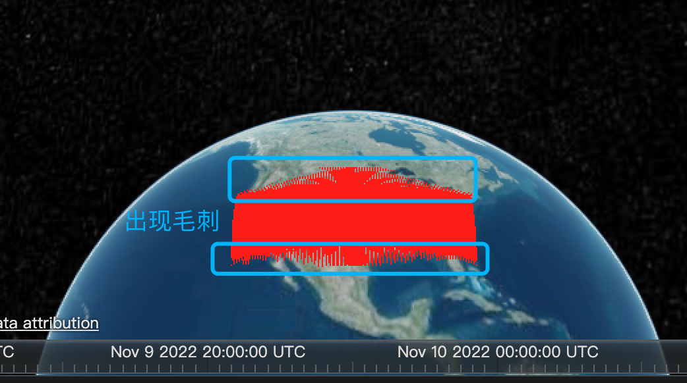
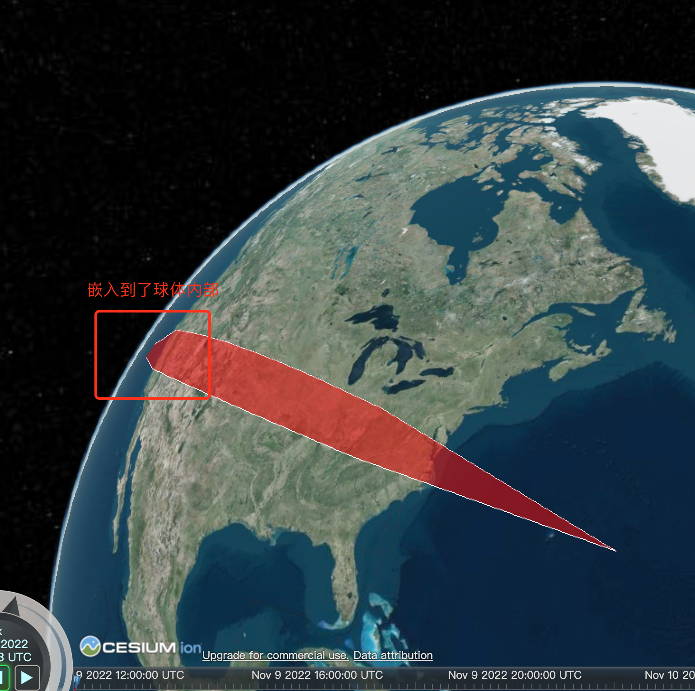
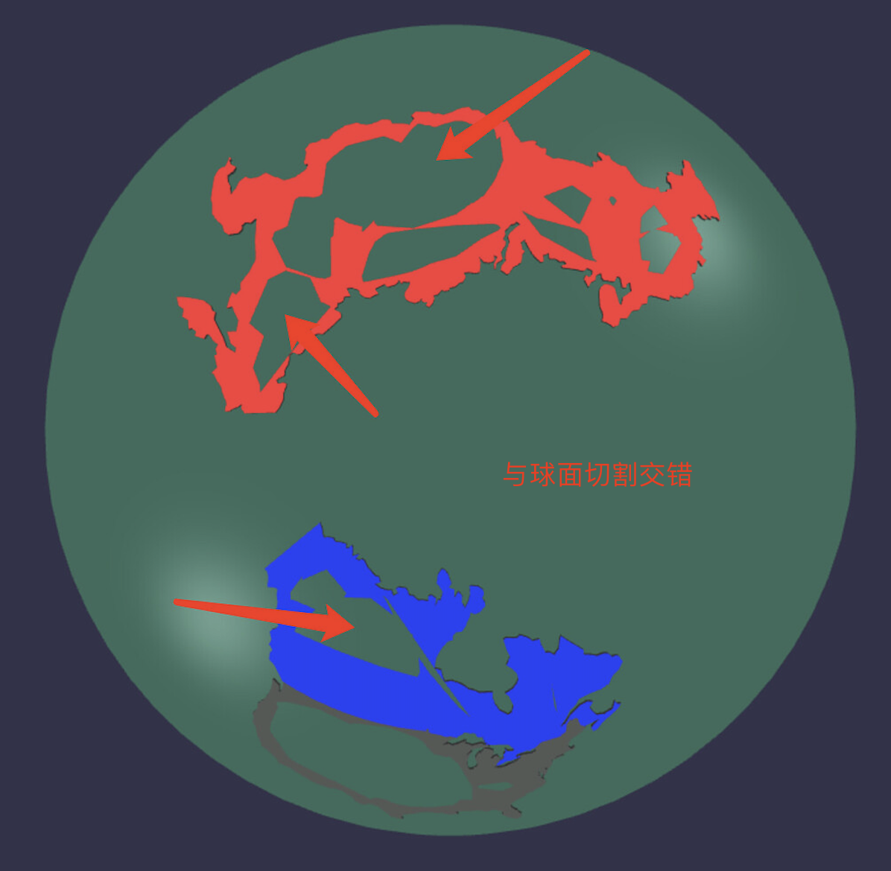

基于 Babylon 的球面贴合元素构建器。
目前暂不方便公开代码，仅简单介绍下部分可以公开的方案。
关于此方案的更多讨论，可参见 Babylon 社区。
对于 3D 地球场景，很多时候我们需要点线面元素来示意地点、路径、区域，但目前业界要么放弃这块的功能，要么使用 hack 的方式实现，但存在这一些不完美的问题：



你的浏览器暂不支持当前视频的播放
为了更好看出与球体表面的贴合性，这里把球体三角面的 segment 数值降低，如下：